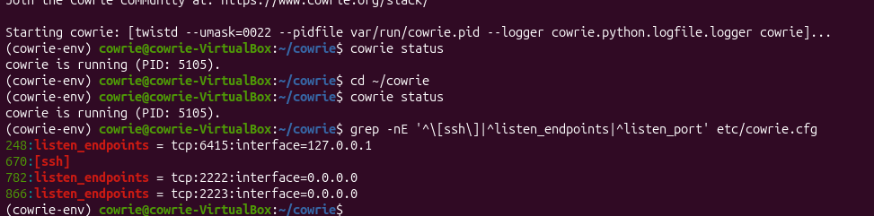
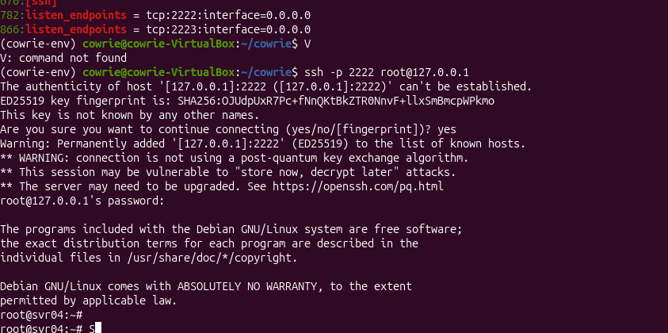

Cybersecurity / Homelab
Building a Cowrie SSH Honeypot
I've been working on my cybersecurity homelab, and one of the projects I'm building is an SSH honeypot using Cowrie. I want to understand what happens when someone connects, what gets logged, and how I can use that information to investigate activity.
My setup
- Windows PC
- Oracle VirtualBox
- Ubuntu Linux VM
- Cowrie SSH honeypot
- TCP port 2222 for testing
I'm keeping everything in a virtual lab so I can test things in a controlled environment without exposing the honeypot to the public internet.
Getting Cowrie running
I installed the prerequisites, cloned the official Cowrie repository, set up a Python virtual environment, and installed the dependencies. After configuring and starting Cowrie, I checked that the service was running.

I then connected over SSH using the local loopback address on port 2222 and tried a few harmless commands. This was my first test to make sure the connection worked and Cowrie was recording the session.

Checking the logs
The logs are one of the main reasons I chose Cowrie. It can record authentication activity, commands entered during a session, and other connection details in a JSON event log.
The log file I'm looking at is
var/log/cowrie/cowrie.json. Since the events are
structured, I can use Python to help summarize activity and look for
patterns.
I'm doing this so i can understand the events and figure out what deserves attention.